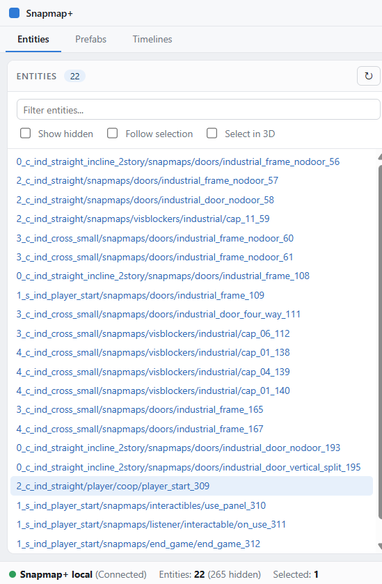
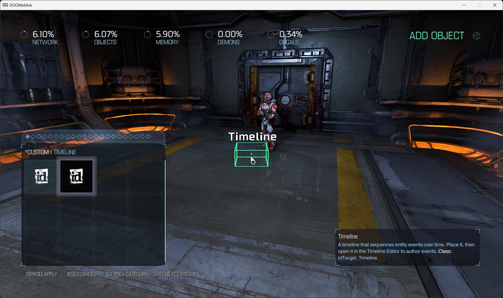
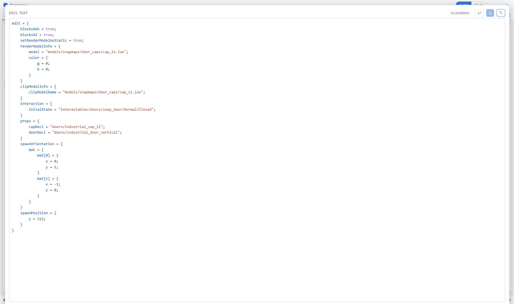

The SnapMap editor, unchained.
Edit every property the engine knows. Bypass the stock editor's size, name, and palette limits. Place entities SnapMap was never built to expose. Your maps stay fully playable for everyone — console players included, nothing to install on their end.

What it opens up
Snapmap+ reads and writes the map data itself instead of going through the stock editor's menus — so the editor's guardrails simply don't apply.
Every property
Entities carry far more fields than SnapMap's Properties menu shows. See and edit all of them, with syntax coloring and a live problem checker.
No guardrails
Name-length caps, max sizes, fixed texture and model pickers — those are UI limits, not engine rules. Scale past the max, apply any material.
Place anything
The engine has entity types SnapMap's palette never exposed. Place them from the *Custom tab in DOOM's own Create menu, then reclass at will.
Timeline editor
Script multiple actions on multiple entities with staggered timing — a dedicated visual editor for the engine's most powerful scripting entity.
Prefabs
Save a group of entities once, paste it into any map, organize in folders — and share a prefab as a single file with other Snapmap+ users.
Bulk editing
SnapStack console commands edit dozens of entities at once — retexture a whole selection, bind objects to a mover, rewire signaling in three lines.
Up and running in three steps
Download
Grab snaphak.exe with the button above. One small file — it keeps itself and Snapmap+ up to date from then on.
Double-click it
The installer finds your DOOM 2016 install automatically, asks you to confirm, and places two files. Uninstalling restores vanilla exactly.
Open SnapMap
Launch DOOM, open a map in the SnapMap editor — the Snapmap+ window appears alongside the game. Alt+Tab over and start editing.
Heads-up: Snapmap+ currently targets the DOOM build from before the April 2024 patch — a one-time depot download puts you on it, and online map publishing still works. The install section of the guide walks through it.
In action



*Custom tab, right inside DOOM's own Create menu.